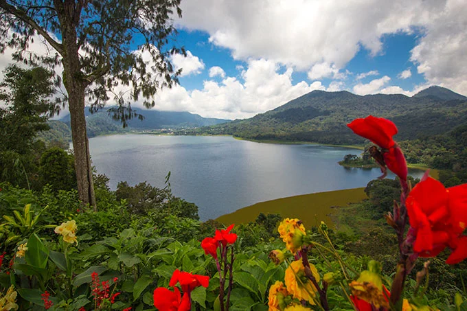

KEBUN RAYA BEDUGUL
Sejarah Kebun Raya Bedugul
Berawal dari gagasan Prof. Ir. Kusnoto Setyodiwiryo, Direktur Lembaga Pusat Penyelidikan Alam yang merangkap sebagai Kepala Kebun Raya Indonesia, dan I Made Taman, Kepala Lembaga Pelestarian dan Pengawetan Alam saat itu yang berkeinginan untuk mendirikan cabang Kebun Raya di luar Jawa, dalam hal ini Bali. Pendekatan kepada Pemda Bali dimulai tahun 1955, hingga akhirnya pada tahun 1958 pejabat yang berwenang di Bali secara resmi menawarkan kepada Lembaga Pusat Penyelidikan Alam untuk mendirikan Kebun Raya di Bali.
Berdasarkan kesepakatan lokasi Kebun Raya ditetapkan seluas 50 ha yang meliputi areal hutan reboisasi Candikuning serta berbatasan langsung dengan Cagar Alam Batukau. Tepat pada tanggal 15 Juli 1959 Kebun Raya “Eka Karya” Bali diresmikan oleh Prof. Ir. Kusnoto Setyodiwiryo, Direktur Lembaga Pusat Penyelidikan Alam sebagai realisasi SK Kepala Daerah Tingkat I Bali tanggal 19 Januari 1959 No. 19/E.3/2/4.
Nama “ Eka Karya ” untuk Kebun Raya Bali diusulkan oleh I Made Taman. “ Eka ” berarti Satu dan “ Karya ” berarti Hasil Kerja . Jadi “ Eka Karya ” dapat diartikan sebagai Kebun Raya pertama yang merupakan hasil kerja bangsa Indonesia sendiri setelah Indonesia merdeka. Kebun raya ini dikhususkan untuk mengoleksi Gymnospermae (tumbuhan berdaun jarum) dari seluruh dunia karena jenis-jenis ini dapat tumbuh dengan baik di dalam kebun raya. Koleksi pertama banyak didatangkan dari Kebun Raya Bogor dan Kebun Raya Cibodas, antara lain Araucaria bidwillii, Cupresus sempervirens dan Pinus masoniana . Jenis lainnya yang merupakan tumbuhan asli daerah ini antara lain Podocarpus imbricatus dan Casuarina junghuhniana.
Sejak resmi berdiri, perkembangan Kebun Raya “Eka Karya” Bali selalu mengalami pasang surut dengan silih bergantinya pengelolaan, yaitu antara Dinas Kehutanan Propinsi Bali dan Kebun Raya sendiri. Pengelolaan Kebun Raya sempat dua kali dititipkan pada Dinas Kehutanan Propinsi Bali, yaitu pada 15 Juli 1959 – 16 Mei 1964 dan setelah peristiwa G 30 S/PKI (1966 – 1975). Pengelolaan kebun secara langsung oleh staf kebun raya dilakukan juga selama 2 periode, yakni sejak 16 Mei 1964 – Desember 1965 dan 1 April 1975 hingga sekarang.

Harga Tiket Masuk
| Kategori |
Weekdays |
Weekend |
| Harga Tiket Masuk |
Rp 20.000/orang |
Rp 30.000/orang |
| Parkir Bus |
Rp 50.000 |
Rp 50.000 |
| Parkir Mobil Roda 4 |
Rp 15.000 |
Rp 20.000 |
| Sepeda Motor |
Rp 5.000 |
Rp 15.000 |
| Rental sepeda semi elektrik |
Rp 40.000/jam |
Rp 40.000/jam |
| Sewa sepeda |
TRp 30.000/jam |
Rp 30.000/jam |
| Sewa sepeda anak |
Rp 25.000/jam |
Rp 25.000/jam |
| Rental buggy |
Rp 150.000/jam |
Rp 200.000/jam |
| Sewa Scooter Listrik |
Rp 50.000/30 menit |
Rp 40.000/10-15 menit |
Barang Yang Wajib Di Bawa Saat Liburan Ke Kebun Raya Bedugul Bali
Membawa barang yang tepat saat liburan ke salah satu tempat wisata di Bali akan sangat membantu kenyamanan liburan anda di Bali. Berikut ini adalah barang yang wajib anda bawa saat liburan ke Bali Botanical Garden Bedugul
● Payung & jas hujan. Peluang hujan di area Bedugul sangatlah tinggi terutama pada sore hari.
● Makanan ringan dan air mineral.
● Sunblock atau Kream tabir Surya.
● Kamera.
● Selain itu, jangan lupa membawa uang tunai.
● Topi.
● Hand sanitizer.
● Masker.
● Pergunakan sepatu jalan.
● Power bank dan kabel charger yang support handphone serta kamera anda.
● Travel pillow, yang dapat anda gunakan untuk beristirahat di dalam kendaraan.
● Kemudian peralatan P3K.
● Multivitamins.
Alamat atau Lokasi Pura Ulun Danu Beratan Bedugul
Lokasi Kebun Raya Bedugul terletak di Jl. Kebun Raya, Candikuning, Kecamatan Baturiti, Kabupaten Tabanan, Bali. Jaraknya sangat dekat dengan Pura Ulun Danu Beratan yang berada di sisi timur Kebun Raya.
Anda bisa mengunjungi tempat wisata ini dengan memanfaatkan Google Maps yang akan menunjukan rute terbaik dari manapun Anda berangkat. Bisa juga dengan memanfaatkan jasa sopir dari rental mobil innova venturer Bali atau Biro Perjalanan yang siap mengantar Anda langsung menuju lokasi.
Untuk mempermudah anda menemukan lokasi Pura Ulun Danu, mohon gunakan Google Maps yang sudah ditampilkan!
Tempat Wisata Lainnya

Danau Bratan
Danau Bratan yang terletak di Bedugul adalah danau terbesar kedua setelah danau Batur di pulau Bali. Selain Danau Beratan, juga terdapat danau kembar yaitu Danau Buyan dan Danau Tamblingan yang berlokasi tidak jauh dari area tersebut.
Lihat

Pura Ulun Danu
Pura Ulun Danu atau Pura Penataran Agung Ulun Danu adalah salah satu dari sembilan Pura Khayangan Jagat yang mengelilingi Pulau Bali. Pura ini dibangun oleh I Gusti Agung Putu, Raja Puri Mengwi pertama pada Tahun Saka 1556 atau 1634 Masehi.
Lihat

Danau Buyan
Danau Buyan, Danau Tamblingan, dan Danau Beratan diyakini dulunya merupakan sebuah kaldera raksasa dari Gunung Lesung yang dulu saling menyatu. Namun setelah Gunung Lesung meletus beberapa ribu tahun silam, kaldera tersebut terpecah menjadi dua dan salah satunya adalah Danau Beratan.
Lihat